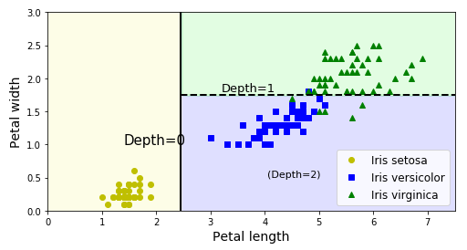

Ensemble Methods
Ecole Nationale Supérieure de Cognitique

Summary
- Decision Trees
- Ensemble Learning
- Random Forests
- Boosting Algorithms
Decision Trees
Decision Trees in a nutshell
- Supervised method, used for classification or regression.
- Build a tree-like structure based on a series of questions on the data.
Example: Iris dataset

Tree nodes
- Leaf or non-leaf.
- Gini: measure of the node impurity.
- Samples: number of samples the node applies to.
- Value: number of samples of each class the node applies to.
The Gini score
$G_i = 1- \sum_{k=1}^K {p_{i, k}}^2$$p_{i, k}$: ratio of classkinstances in the$i^{th}$node.$Gini = 0$: all samples belong to the same class (“pure” node).- Other possible measure: entropy (level of disorder).
Decision tree boundary

Training a decision tree
- CART algorithm: at each step, find the feature and threshold that produce the purest subsets (weighted by their size).
- Said differently: look for the highest Gini gain.
- More details on training.
Decision trees for regression
Advantages of decision trees
- Versatile
- Very fast inference
- Intuitive and interpretable (white box)
- No feature scaling required
Decision trees shortcomings
- #1 problem: overfitting.
- Regularization through hyperparameters:
- Maximum depth of the tree (pruning).
- Minimum number of samples needed to split a node.
- Minimum number of samples for any leaf node.
- Sensibility to small variations in the training data.
Example: regularization with min sample leafs
Ensemble learning
General idea
- Combining several predictors will lead to better results.
- A group of predictors is called an ensemble.
- Works best when predictors are diverse.
- Less interpretable and harder to tune than an individual predictor.
Hard voting classifiers

Soft voting classifiers
- Use class probabilities rather than class predictions.
- Often yields better results than hard voting (highly confident predictions have more weight).
Bagging and pasting
- Each predictor is fed with different random subsets of the training data.
- Bagging (Bootstrap Aggregating) aka sampling with replacement: training instances can be repeated in the subsets.
- [1, 2, 3, 4, 5, 6] => [1, 2, 2, 3, 6, 6] for a particular predictor.
- Pasting: they cannot.
- Out-of-bag samples can be used as a validation set.
Random forests
Random forests in a nutshell
- Ensemble of Decision Trees, often trained via bagging.
- Used for classification or regression.
Random forest principle
At each node, only a random subset of the features is considered for splitting.
Boosting algorithms
General idea
- Train predictors of the ensemble sequentially, each one trying to correct its predecessor.
- Combine several weak learners into a strong learner.
- Computations cannot be parallelized.
AdaBoost
Misclassified instances are given more weight in the subsequent model.
Gradient Boosting
- Each predictor is trained on the residual error of its predecessor (
$y - y'$). - The ensemble prediction is the sum of each individual prediction.